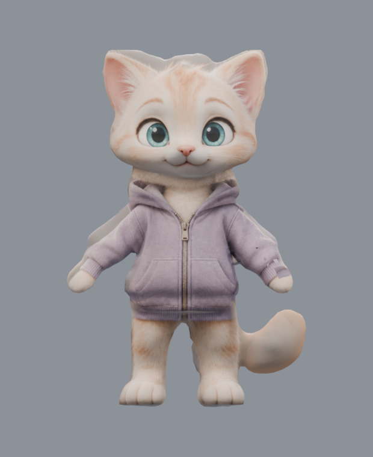
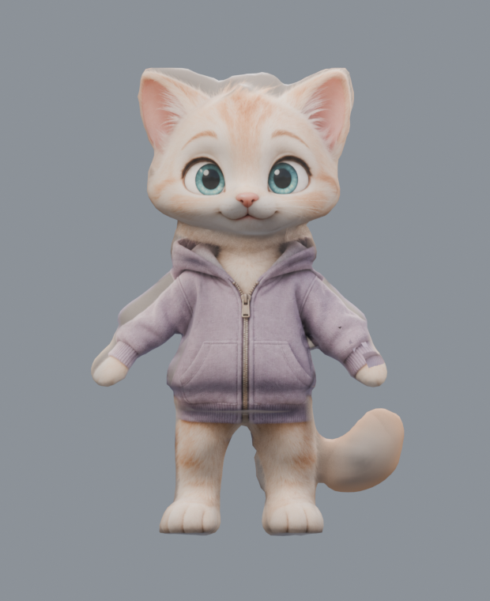
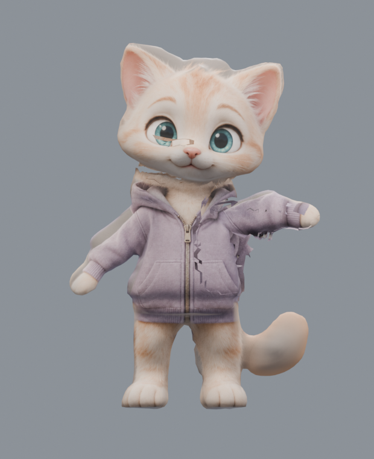
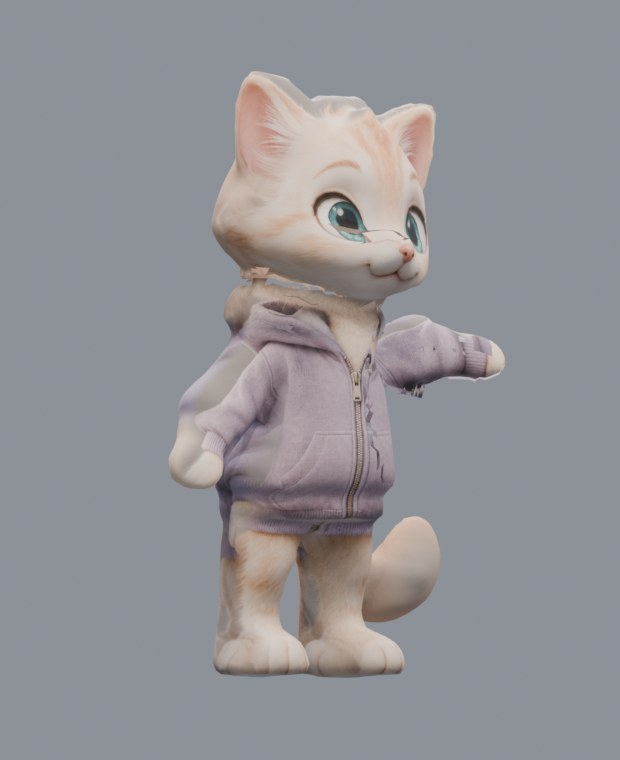
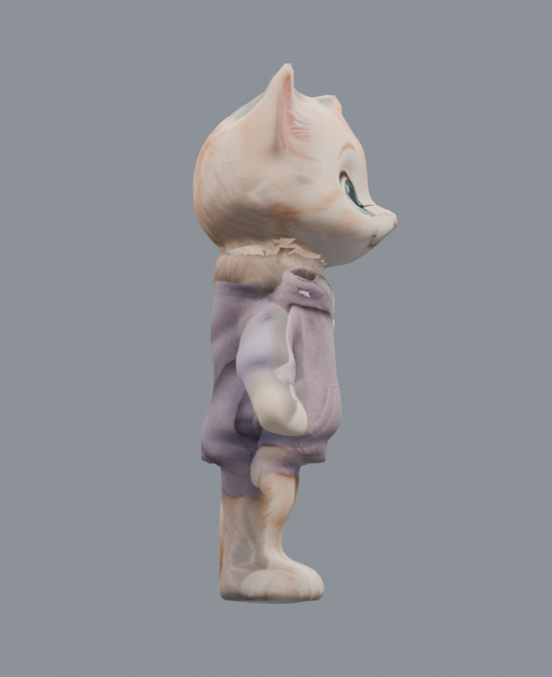

← К игре
Milo: проба 3D формы
Художественная работа продолжается.
Это восемь реальных рендеров экспортированного GLB. Сетка стала мягче, но глаза и рот пока нарисованы на текстуре; худи, уши и хвост требуют доработки. Рига и анимаций в этом файле ещё нет. Проба автоматического рига ниже не прошла: плечо и ворот рвутся при взмахе. Персонаж в игре не заменён.

Спереди
Проведите по изображению или нажмите стрелки. Это поворот по сохранённым кадрам.
Скачать пробный GLB · Все ракурсы
Восемь ракурсов
Проверка движения: не прошла
Те же части тела и толстовки оказались слиты в одной сетке. Кости удалось привязать ко всем вершинам, но даже после сглаживания весов поднятие лапы открыло разрывы у плеча и шеи. Нужна новая топология для деформации и отдельная одежда.

Исходная поза

Взмах — видно разрывы

Взмах — три четверти

Взмах — сбоку
Этот просмотр отделён от игрового CAT и не содержит данных доступа к ISP.